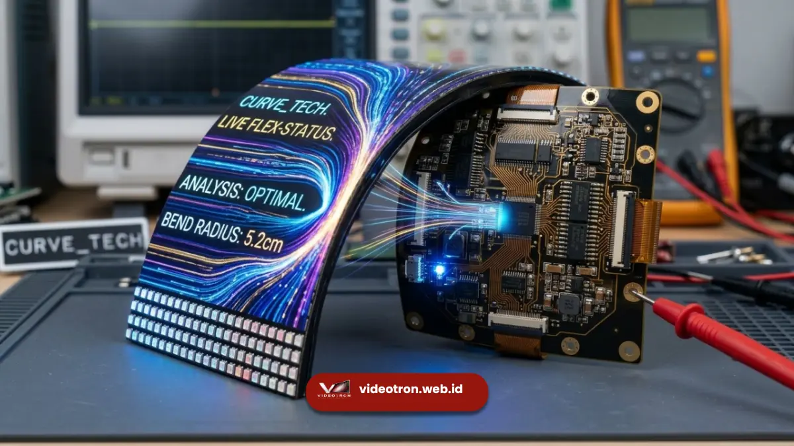

Cara kerja videotron curved dimulai dari penyusunan cabinet LED berukuran kecil dengan sistem sambungan fleksibel, dipadukan dengan mapping konten khusus agar gambar tetap presisi pada permukaan melengkung.
Teknologi ini menggabungkan presisi mekanik rangka dengan pengolahan sinyal digital mutakhir untuk menghadirkan tampilan visual spektakuler pada berbagai gelaran acara panggung.
Poin Penting Cara Kerja Videotron Curved:
- Videotron curved menggunakan cabinet dengan engsel atau kunci fleksibel yang memungkinkan sudut kemiringan antar modul.
- Radius lengkungan ditentukan sejak tahap perencanaan berdasarkan konsep panggung dan jarak pandang audiens.
- Mapping konten diperlukan agar visual tidak terdistorsi saat ditampilkan pada layar melengkung.
- Rigging videotron curved membutuhkan truss custom yang mengikuti bentuk kurva.
- Proses kalibrasi warna dan kecerahan tetap dilakukan seperti pada videotron flat, hanya dengan penyesuaian tambahan pada titik sambungan.
- 1. Bagaimana Cabinet Videotron Curved Bisa Membentuk Lengkungan?
- 2. Mengapa Mapping Konten Diperlukan pada Videotron Curved?
- 3. Bagaimana Proses Rigging Videotron Curved di Lapangan?
- 4. Apa Saja Faktor yang Memengaruhi Kehalusan Lengkungan Videotron Curved?
- 5. Apa Perbedaan Teknis Videotron Curved dan Videotron Flat?
- 6. Bagaimana Kalibrasi Warna dan Kecerahan Dilakukan pada Videotron Curved?
Bagaimana Cabinet Videotron Curved Bisa Membentuk Lengkungan?
Cabinet videotron curved dirancang dengan sistem sambungan fleksibel berupa engsel atau kunci geser yang memungkinkan setiap modul dimiringkan pada sudut tertentu sehingga tersusun membentuk kurva yang halus.
Setiap cabinet biasanya berukuran lebih kecil dibanding cabinet videotron flat standar, karena ukuran yang lebih kecil membuat sudut kemiringan antar modul lebih presisi dan lengkungan yang dihasilkan lebih halus tanpa terlihat patahan yang kasar.
Material cabinet juga umumnya lebih ringan agar memudahkan proses pemasangan dan penyesuaian sudut di lapangan. Pada penerapan videotron curved event, fleksibilitas cabinet ini menjadi kunci dalam mewujudkan bentuk cekung (concave), cembung (convex), hingga bentuk gelombang dinamis.
Teknisi lapangan akan mengunci setiap cabinet pada sudut yang sudah dihitung sebelumnya berdasarkan radius lengkungan yang direncanakan, kemudian melakukan pengecekan kerataan permukaan sebelum layar dinyalakan.
Mengapa Mapping Konten Diperlukan pada Videotron Curved?
Mapping konten diperlukan pada videotron curved agar visual yang ditampilkan tidak mengalami distorsi bentuk, warna, atau proporsi saat diproyeksikan pada permukaan yang melengkung.
Pada videotron flat, konten video umumnya bisa langsung ditayangkan tanpa penyesuaian khusus karena permukaannya rata.
Berbeda halnya dengan videotron curved, di mana software mapping akan menyesuaikan piksel-piksel gambar dengan koordinat fisik layar yang melengkung, sehingga elemen visual seperti teks, logo, atau elemen 3D tetap terlihat proporsional dari sudut pandang audiens.
Proses ini biasanya dilakukan oleh tim teknis khusus menggunakan software media server yang sudah dikonfigurasi sesuai bentuk fisik layar. Tanpa mapping yang tepat, konten dapat terlihat melengkung tidak wajar atau bahkan terpotong pada titik sambungan antar cabinet.

Proses perakitan rigging dan rangka truss custom untuk menopang struktur lengkungan videotron secara aman dan kokoh.Bagaimana Proses Rigging Videotron Curved di Lapangan?
Proses rigging videotron curved dilakukan dengan membangun struktur truss custom yang mengikuti radius lengkungan, kemudian memasang cabinet secara bertahap dari titik tengah ke arah sisi kiri dan kanan panggung.
Tahapan umum rigging videotron curved meliputi:
- Survei lokasi untuk memastikan struktur venue mampu menopang beban dan bentuk lengkungan yang direncanakan.
- Perakitan frame atau truss custom sesuai radius yang sudah ditentukan pada tahap desain.
- Pemasangan cabinet LED secara bertahap dengan pengecekan sudut kemiringan di setiap titik sambungan.
- Pengecekan kabel data dan power agar tetap rapi mengikuti bentuk lengkungan tanpa mengganggu estetika panggung.
- Kalibrasi warna, kecerahan, dan pengujian mapping konten sebelum acara berlangsung.
Berdasarkan praktik umum di lapangan, proses rigging videotron curved membutuhkan waktu lebih panjang dibanding videotron flat pada periode persiapan event, karena tahapan penyesuaian sudut dan kalibrasi yang lebih detail.
Apa Saja Faktor yang Memengaruhi Kehalusan Lengkungan Videotron Curved?
Kehalusan lengkungan videotron curved dipengaruhi oleh ukuran cabinet, jumlah titik sambungan, dan presisi sudut kemiringan yang digunakan pada setiap modul saat proses instalasi.
Semakin kecil ukuran cabinet yang digunakan, semakin banyak titik sambungan yang tersedia untuk membentuk kurva, sehingga hasil lengkungan terlihat lebih halus dan minim patahan visual.
Sebaliknya, cabinet berukuran besar cenderung menghasilkan lengkungan yang lebih bersudut karena jumlah titik sambungannya lebih sedikit.
Selain ukuran cabinet, kualitas mekanisme engsel atau kunci fleksibel pada setiap modul turut menentukan konsistensi sudut sepanjang layar, sehingga pemilihan cabinet dengan sistem sambungan yang presisi menjadi faktor penting dalam menghasilkan videotron curved yang rapi.
Apa Perbedaan Teknis Videotron Curved dan Videotron Flat?
Perbedaan teknis utama videotron curved dan videotron flat terletak pada desain cabinet, kebutuhan mapping konten, dan struktur rigging yang digunakan saat instalasi.
Videotron flat menggunakan cabinet dengan sambungan kaku yang disusun sejajar lurus, sehingga proses instalasi relatif lebih sederhana dan cepat.
Videotron curved sebaliknya membutuhkan cabinet dengan sambungan fleksibel, perhitungan radius yang presisi, serta mapping konten tambahan agar hasil visual tetap optimal.
Dari sisi output visual, videotron flat lebih optimal dilihat dari sudut tegak lurus terhadap layar, sedangkan videotron curved dirancang untuk memberikan sudut pandang yang lebih luas dan nyaman bagi audiens yang duduk di berbagai posisi.
Bagaimana Kalibrasi Warna dan Kecerahan Dilakukan pada Videotron Curved?
Kalibrasi warna dan kecerahan pada videotron curved dilakukan dengan menyamakan output setiap cabinet agar tidak terjadi perbedaan tone warna di titik sambungan antar modul yang melengkung.
Proses ini umumnya dilakukan menggunakan software kalibrasi bawaan sistem kontrol videotron, di mana teknisi akan memeriksa setiap baris dan kolom cabinet secara bertahap.
Pada videotron curved, tahap ini membutuhkan perhatian ekstra karena sudut pandang cahaya terhadap sensor kalibrasi bisa sedikit berbeda pada bagian layar yang melengkung dibanding bagian yang lebih datar.
Setelah kalibrasi warna selesai, teknisi biasanya juga melakukan uji tayang menggunakan konten asli yang akan ditampilkan saat acara, untuk memastikan hasil akhir sudah sesuai dengan konsep visual yang direncanakan tim kreatif.
Cara kerja videotron curved bergantung pada tiga elemen utama, yaitu cabinet dengan sambungan fleksibel, mapping konten yang presisi, dan rigging custom yang mengikuti radius lengkungan. Memahami proses ini membantu tim produksi event merencanakan jadwal persiapan yang lebih realistis dan hasil visual yang lebih maksimal.
Konsultasikan kebutuhan teknis instalasi layar LED lengkung Anda bersama videotron.web.id untuk hasil panggung yang profesional dan bebas kendala.

Hawa Nadira
LED Technology Consultant dan Visual Educator
Konsultan dan spesialis solusi display digital berdedikasi tinggi yang fokus membagikan panduan edukatif mengenai penerapan teknologi layar LED videotron untuk kebutuhan interior modern di Indonesia.